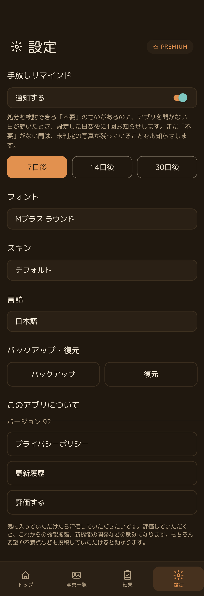
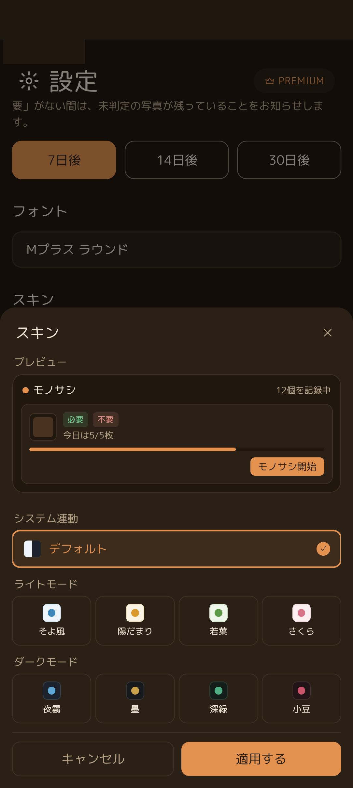
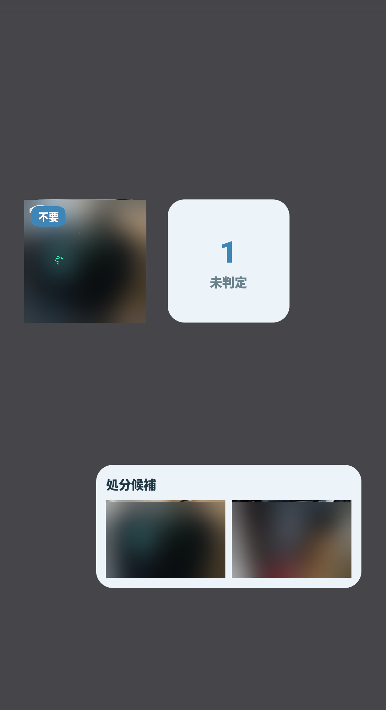

⚙️ 設定画面の概要
下部ナビゲーションの「設定」タブから、通知、外観、バックアップなど各種カスタマイズを行えます。

手放しリマインド、フォント、スキン、言語、バックアップ・復元がまとまった設定画面
🔔 手放しリマインド通知
せっかく「不要」と判断できたのに、忙しさでそのまま放置してしまうのを防ぐためのスマート通知機能です。
1
「通知する」スイッチをオン
手放しリマインド機能が有効になり、通知を受け取る準備が整います。
2
通知間隔（7日後 / 14日後 / 30日後）を選択
ご自身の片付けペースに合わせてボタンを選択します。アプリを開かない期間がその日数を超えたとき、1回だけお知らせします。
💡 通知の仕組み
処分を検討できる「不要」のものがあるときはその処分を促し、まだ「不要」がない間は未判定の写真が残っていることをお知らせします。しつこく何度も鳴ることはなく、設定日数ごとに1回だけ控えめにお知らせします。
処分を検討できる「不要」のものがあるときはその処分を促し、まだ「不要」がない間は未判定の写真が残っていることをお知らせします。しつこく何度も鳴ることはなく、設定日数ごとに1回だけ控えめにお知らせします。
🎨 スキン（テーマカラー）の変更
「設定」画面の「スキン」をタップすると、多彩な配色パレットからお好みのテーマを選択できます。

プレビューを確認しながら、ライト4種・ダーク4種・システム連動をワンタップで切り替え
| テーマ分類 | スキン名 | 特徴 |
|---|---|---|
| システム連動 | デフォルト | 端末のダーク/ライト設定に自動追従する標準配色 |
| ライトモード | そよ風 | 爽やかなブルー系の清潔感あるデザイン |
| 陽だまり | あたたかいアンバー・オレンジ系の落ち着いたデザイン | |
| 若葉 | 安らぎのあるフレッシュグリーン系デザイン | |
| さくら | 優しいピンク・ローズ系の華やかなデザイン | |
| ダークモード | 夜霧 | 深みのあるブルーグレー系のクールなダークデザイン |
| 墨 | 黒を基調としたシックでコントラストの高いデザイン | |
| 深緑 | 落ち着きのあるディープフォレストグリーン系デザイン | |
| 小豆 | 上品なバーガンディ・ワインレッド系デザイン |
📱 Android ホーム画面ウィジェット
スマートフォンのホーム画面に「モノサシ」のウィジェットを配置すると、アプリを開かなくても持ち物の状態が自然と目に入り、日常の中で断捨離への意識を高めることができます。

「不要」写真ウィジェット、未判定件数ウィジェット、処分候補ウィジェットを自由に配置可能
1
写真ウィジェット（不要・判定中）
登録した写真がホーム画面にカードとして表示され、タップするとすぐにアプリで詳細を確認できます。
2
未判定件数ウィジェット
まだ判定が終わっていない写真の数を大きな数字で表示。今日の目標達成を促します。
3
処分候補ウィジェット
「不要」の判断が下された持ち物が並んで表示され、週末の片付けやゴミ出しのタイミングを見逃しません。
💾 バックアップとデータの復元
大切な持ち物の判定データや写真を守るため、アプリ内で完結する暗号化バックアップ機能を備えています。
1
バックアップを作成
「バックアップ」ボタンをタップすると、データベースと写真が暗号化された安全なバックアップファイルとして保存・共有（Googleドライブ等へ転送）できます。
2
機種変更時のデータ復元
新しいスマートフォンに「モノサシ」をインストール後、設定画面で「復元」をタップしてバックアップファイルを選択すれば、以前の判定状況がそのまま復元されます。
❓ 設定に関するFAQ
通知が届かない場合はどうすればいいですか？
お使いのスマートフォンの「設定」アプリ >「アプリ」>「モノサシ」>「通知」が許可されていることをご確認ください。また、バッテリーセーバー機能などでバックグラウンド動作が制限されていないかもご確認ください。
アプリの言語を変更できますか？
はい、設定画面の「言語」から、日本語を含む12の言語にいつでも自由に切り替えることができます。